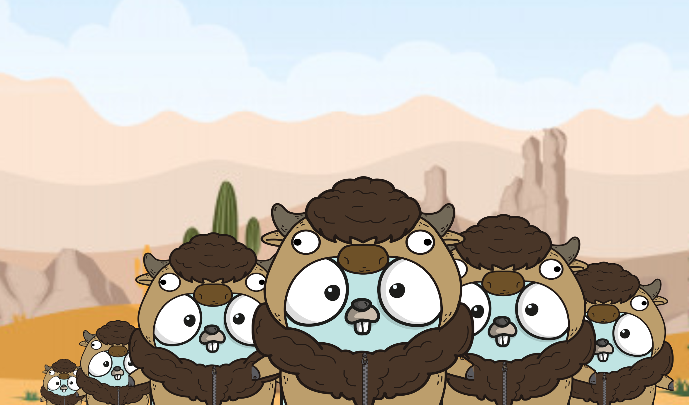

Stampede
Bootstrap kubernetes clusters over multicast! üöÄ
Stampede:
- Uses lightweight multicast traffic
- Written in Go ❤️
- Elects a leader
- Joins subsequent nodes as followers
- Creates large or small kubernetes clusters easily!
Get started
Go to GitHub